Started
Mar 8, 2025 01:39:12 pm
Ended
Mar 8, 2025 01:43:10 pm
Features Passed
2
Features Failed
0
Features
Scenarios
Steps
Timeline
-
Validate Task Creation in the Application
1:39:12 pm / 00:02:25:759 Pass
Validate Task Creation in the Application
03.08.2025 1:39:12 pm 03.08.2025 1:41:38 pm 00:02:25:759 · #test-id=1PassVerify user can create tasksPassVerify user can create tasksGiven user open applicationcom.automation.steps.Hooks.takeScreenshot(io.cucumber.java.Scenario)Verify user can create tasksThen verify user is on my tasks pagecom.automation.steps.Hooks.takeScreenshot(io.cucumber.java.Scenario)Verify user can create tasksWhen user click create task buttoncom.automation.steps.Hooks.takeScreenshot(io.cucumber.java.Scenario)Verify user can create tasks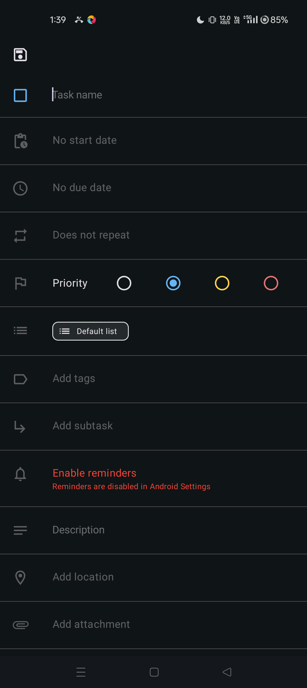Then verify user is on create task pagecom.automation.steps.Hooks.takeScreenshot(io.cucumber.java.Scenario)Verify user can create tasks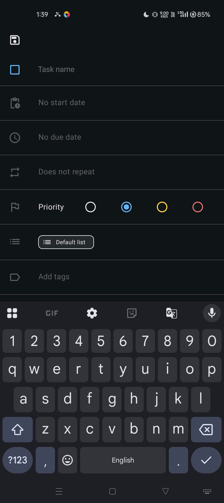When user enter details "shopping" , "12 March 2025" , "13 March 2025"com.automation.steps.Hooks.takeScreenshot(io.cucumber.java.Scenario)Verify user can create tasksThen verify task is added to my tasks "shopping"com.automation.steps.Hooks.takeScreenshot(io.cucumber.java.Scenario)Verify user can create tasks com.automation.steps.Hooks.cleanUp(io.cucumber.java.Scenario)Scenario Execution has been CompletedPassVerify user can create tasksGiven user open applicationcom.automation.steps.Hooks.takeScreenshot(io.cucumber.java.Scenario)Verify user can create tasks
com.automation.steps.Hooks.cleanUp(io.cucumber.java.Scenario)Scenario Execution has been CompletedPassVerify user can create tasksGiven user open applicationcom.automation.steps.Hooks.takeScreenshot(io.cucumber.java.Scenario)Verify user can create tasks Then verify user is on my tasks pagecom.automation.steps.Hooks.takeScreenshot(io.cucumber.java.Scenario)Verify user can create tasksWhen user click create task buttoncom.automation.steps.Hooks.takeScreenshot(io.cucumber.java.Scenario)Verify user can create tasksThen verify user is on create task pagecom.automation.steps.Hooks.takeScreenshot(io.cucumber.java.Scenario)Verify user can create tasksWhen user enter details "gym" , "10 March 2025" , "04 April 2025"com.automation.steps.Hooks.takeScreenshot(io.cucumber.java.Scenario)Verify user can create tasks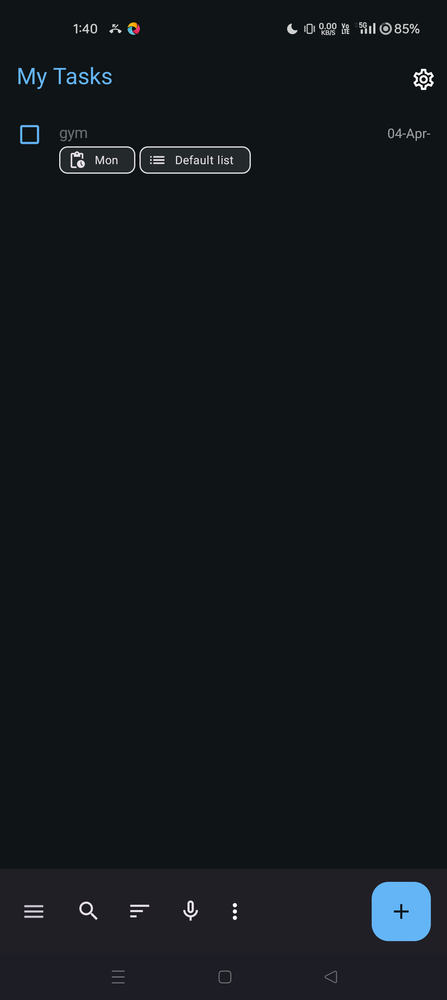Then verify task is added to my tasks "gym"com.automation.steps.Hooks.takeScreenshot(io.cucumber.java.Scenario)Verify user can create tasks
Then verify user is on my tasks pagecom.automation.steps.Hooks.takeScreenshot(io.cucumber.java.Scenario)Verify user can create tasksWhen user click create task buttoncom.automation.steps.Hooks.takeScreenshot(io.cucumber.java.Scenario)Verify user can create tasksThen verify user is on create task pagecom.automation.steps.Hooks.takeScreenshot(io.cucumber.java.Scenario)Verify user can create tasksWhen user enter details "gym" , "10 March 2025" , "04 April 2025"com.automation.steps.Hooks.takeScreenshot(io.cucumber.java.Scenario)Verify user can create tasks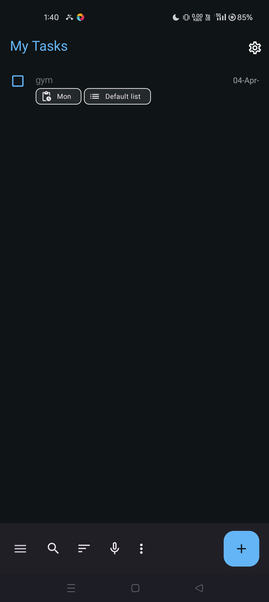Then verify task is added to my tasks "gym"com.automation.steps.Hooks.takeScreenshot(io.cucumber.java.Scenario)Verify user can create tasks com.automation.steps.Hooks.cleanUp(io.cucumber.java.Scenario)Scenario Execution has been Completed
com.automation.steps.Hooks.cleanUp(io.cucumber.java.Scenario)Scenario Execution has been Completed PassVerify user can create tasksGiven user open applicationcom.automation.steps.Hooks.takeScreenshot(io.cucumber.java.Scenario)Verify user can create tasks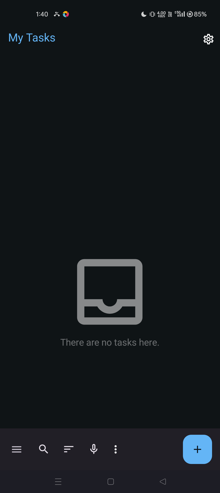Then verify user is on my tasks pagecom.automation.steps.Hooks.takeScreenshot(io.cucumber.java.Scenario)Verify user can create tasks
PassVerify user can create tasksGiven user open applicationcom.automation.steps.Hooks.takeScreenshot(io.cucumber.java.Scenario)Verify user can create tasks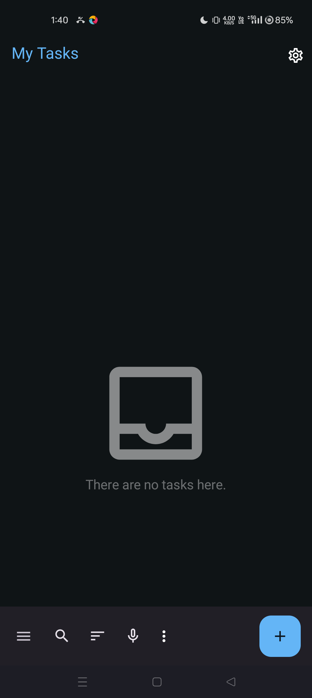Then verify user is on my tasks pagecom.automation.steps.Hooks.takeScreenshot(io.cucumber.java.Scenario)Verify user can create tasks When user click create task buttoncom.automation.steps.Hooks.takeScreenshot(io.cucumber.java.Scenario)Verify user can create tasks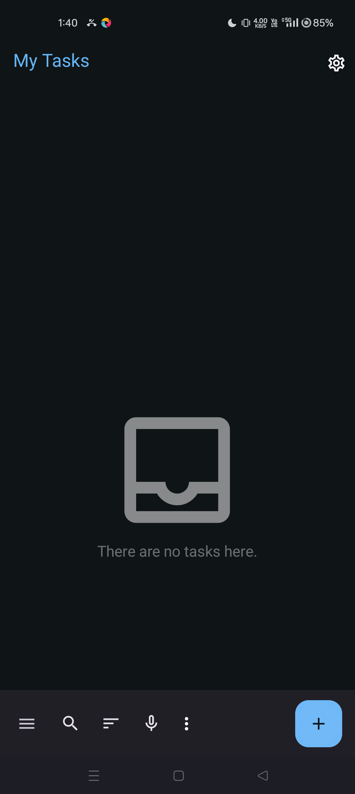Then verify user is on create task pagecom.automation.steps.Hooks.takeScreenshot(io.cucumber.java.Scenario)Verify user can create tasksWhen user enter details "swimming" , "22 March 2025" , "24 May 2025"com.automation.steps.Hooks.takeScreenshot(io.cucumber.java.Scenario)Verify user can create tasksThen verify task is added to my tasks "swimming"com.automation.steps.Hooks.takeScreenshot(io.cucumber.java.Scenario)Verify user can create tasks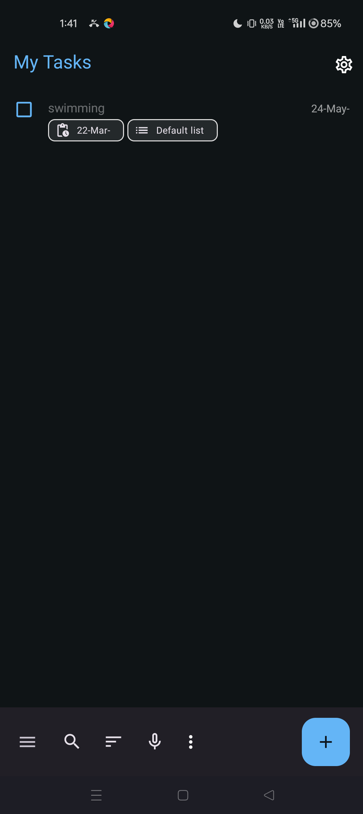com.automation.steps.Hooks.cleanUp(io.cucumber.java.Scenario)Scenario Execution has been Completed
When user click create task buttoncom.automation.steps.Hooks.takeScreenshot(io.cucumber.java.Scenario)Verify user can create tasks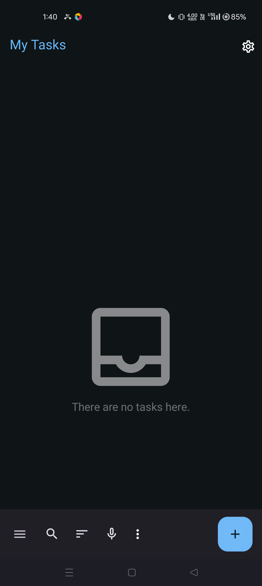Then verify user is on create task pagecom.automation.steps.Hooks.takeScreenshot(io.cucumber.java.Scenario)Verify user can create tasksWhen user enter details "swimming" , "22 March 2025" , "24 May 2025"com.automation.steps.Hooks.takeScreenshot(io.cucumber.java.Scenario)Verify user can create tasksThen verify task is added to my tasks "swimming"com.automation.steps.Hooks.takeScreenshot(io.cucumber.java.Scenario)Verify user can create tasks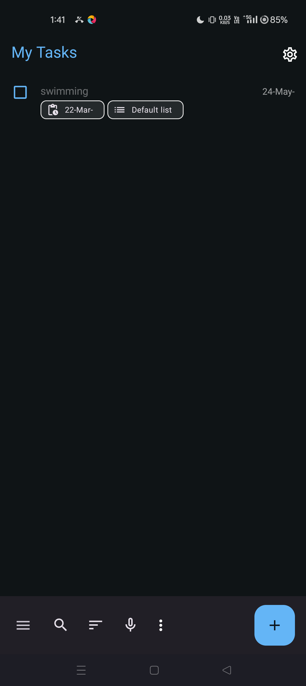com.automation.steps.Hooks.cleanUp(io.cucumber.java.Scenario)Scenario Execution has been Completed
-
Validate End to End Scenario of the Application
1:41:38 pm / 00:01:32:278 Pass
Validate End to End Scenario of the Application
03.08.2025 1:41:38 pm 03.08.2025 1:43:10 pm 00:01:32:278 · #test-id=48PassVerify user can create, update and delete the taskGiven user open applicationcom.automation.steps.Hooks.takeScreenshot(io.cucumber.java.Scenario)Verify user can create, update and delete the taskThen verify user is on my tasks pagecom.automation.steps.Hooks.takeScreenshot(io.cucumber.java.Scenario)Verify user can create, update and delete the task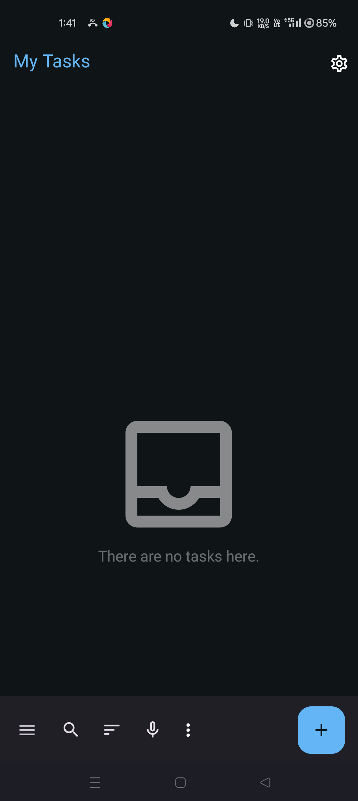When user click create task buttoncom.automation.steps.Hooks.takeScreenshot(io.cucumber.java.Scenario)Verify user can create, update and delete the taskThen verify user is on create task pagecom.automation.steps.Hooks.takeScreenshot(io.cucumber.java.Scenario)Verify user can create, update and delete the taskWhen user enter details "task.name" , "start.date" , "due.date" , "task.description" , "task.location"com.automation.steps.Hooks.takeScreenshot(io.cucumber.java.Scenario)Verify user can create, update and delete the task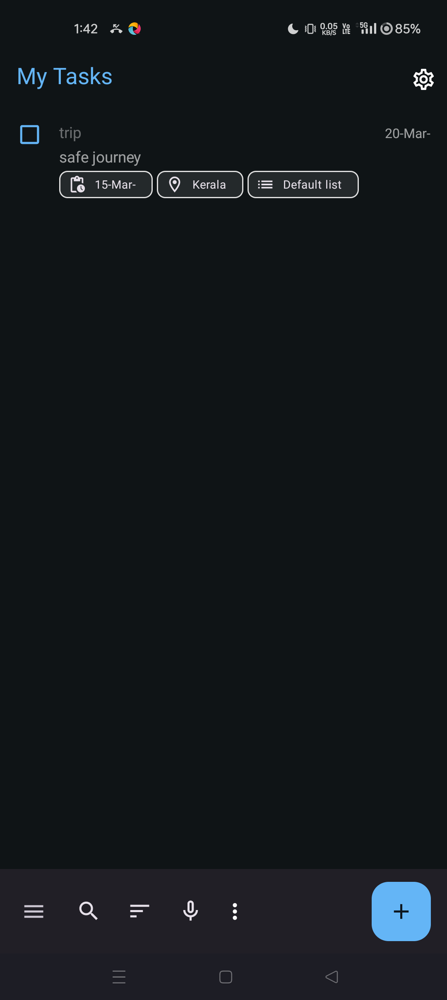Then verify task is added to my tasks page "task.name"com.automation.steps.Hooks.takeScreenshot(io.cucumber.java.Scenario)Verify user can create, update and delete the taskWhen user update due date of the task "task.name" as "updated.due.date"com.automation.steps.Hooks.takeScreenshot(io.cucumber.java.Scenario)Verify user can create, update and delete the taskThen verify due date is updatedcom.automation.steps.Hooks.takeScreenshot(io.cucumber.java.Scenario)Verify user can create, update and delete the taskWhen user clicks on complete checkbox for task "task.name"com.automation.steps.Hooks.takeScreenshot(io.cucumber.java.Scenario)Verify user can create, update and delete the task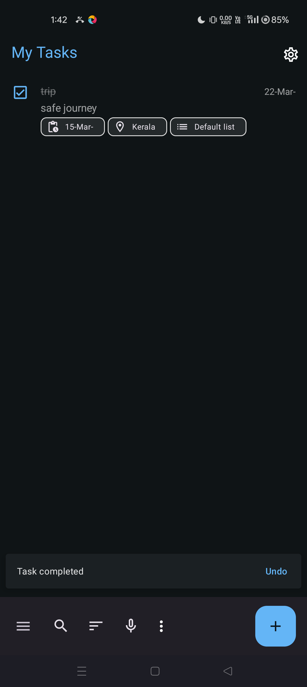Then verify task is checked to completedcom.automation.steps.Hooks.takeScreenshot(io.cucumber.java.Scenario)Verify user can create, update and delete the taskWhen user delete a task "task.name"com.automation.steps.Hooks.takeScreenshot(io.cucumber.java.Scenario)Verify user can create, update and delete the taskThen verify task "task.name" is not displayed in my tasks pagecom.automation.steps.Hooks.takeScreenshot(io.cucumber.java.Scenario)Verify user can create, update and delete the task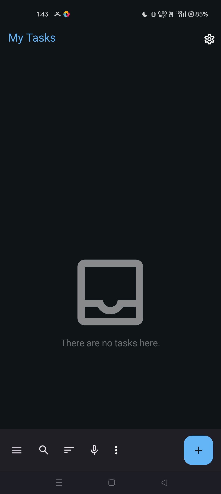com.automation.steps.Hooks.cleanUp(io.cucumber.java.Scenario)Scenario Execution has been Completed